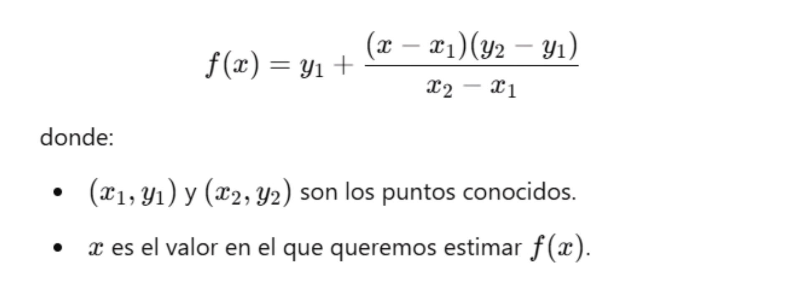

es un método matemático utilizado para estimar valores dentro de un rango definido entre dos puntos conocidos. Se basa en la suposición de que los datos varían linealmente entre estos puntos. Su ecuación general es:
✔ Aplicaciones:
✔ Ventajas:
El método del trapecio es una técnica de integración numérica que se utiliza para aproximar el valor de una integral definida. Consiste en dividir el intervalo [𝑎,𝑏] en subintervalos más pequeños y aproximar el área bajo la curva usando trapecios en lugar de rectángulos.
🔹 Fórmula general del trapecio múltiple:

✔ Aplicaciones:
✔ Ventajas:
METODOS NUMERICOS
UNIVERSIDAD ESTATAL DEL VALLE DE ECATEPEC
UNEVE
INGENIERÍA EN COMUNICACIÓN MULTIMEDIA
ANAYA GONZÁLEZ MARÍA FERNANDA
ALVA RIVERO ATZIN IXCHEL
LÓPEZ GARCÍA BRYAN